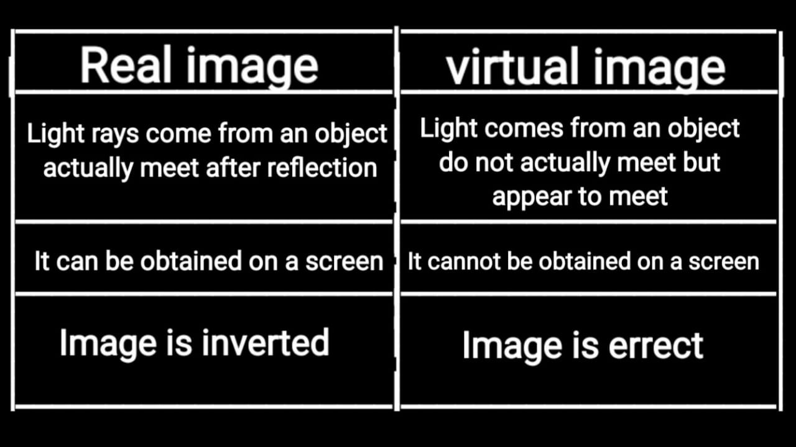

Science important QA
Science important QA
1. Magnetic Filed and SI Units?
Ans: magnetic field is the region around the magnet where its magnetic influence can be felt. It is denoted by B and its unit is Tesla.2. Define Magnetic Field Lines ?
Ans: A magnetic field line is defined as a curve drawn in the magnetic field in such a way that the tangent to the curve at any point gives the direction of the magnetic field.3.Define Magnetic flux density and SI Unit ?
Ans: The number of magnetic field lines crossing unit area kept normal to the direction of field lines is called magnetic flux density. Its unit is Wb/m24. State Right Hand Thumb rule ?
(not posted)5. Define Magnetic flux and its Units ?
Ans: Magnetic flux is the number of magnetic field lines passing through a given area. It is denoted by φ and its unit is weber (Wb).6. Flemmings Right Hand Rule?
Ans: Stretch the thumb, fore finger and middle finger of your right hand mutually perpendicular to each other. If the fore finger indicates the direction of magnetic field and the thumb indicates the direction of motion of the conductor, then the middle finger will indicate the direction of induced current. Fleming’s Right hand rule is also called 'generator rule'.7. Flemmings Left Hand Rule ?
Ans: The law states that while stretching the three fingers of left hand in perpendicular manner with each other, if the direction of the current is denoted by the middle finger of the left hand and the second finger is for direction of the magnetic field, then the thumb of the left hand denotes the direction of the force or movement of the conductor.8. Electric Motor?
Ans: An electric motor is a device which converts electrical energy into mechanical energy.9. A conductor of length 50 cm carrying a current of 5 A is placed perpendicular to a magnetic field of induction 2×10–3 T. Find the force on the conductor.
Solution: Force on the conductor = ILB = 5 × 50 × 10–2 × 2 ×10–3 = 5 × 10–3 N10. A current carrying conductor of certain length, kept perpendicular to the magnetic field experiences a force F. What will be the force if the current is increased four times, length is halved and magnetic field is tripled?
Solution: F = I L B = (4I) × ( L/2) × (3 B) = 6 F Therefore, the force increases six times.11. Laws of reflection ?
Ans: The laws of reflection are:• The angle in which the sound is incident is equal to the angle in which it is reflected.
• Direction of incident sound, the reflected sound and the normal are in the same plane.
12. Distinguish Between Real and virtual image ?
13. Sulphuric acid is called King of Chemicals. Why is it called so?
Ans: Sulphuric acid is called King of Chemicals because it is used in the preparation of many Other compounds. It is used in car batteries also. Acids react with metallic oxides to give salt and water.CaO + H2S04 CaS04 + H2014.Classify acids based on their sources and basicity.
Ans: Acids are classified in different ways as follows: Based on their sources:•Organic acids: Acids present in plants and animals (living things) are organic acids. Example: HCOOH, CH3COOH
•Inorganic acids: Acids prepared from rocks and minerals are inorganic acids or mineral acids. Example: HCl, HNO3, H2SO4